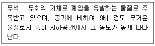
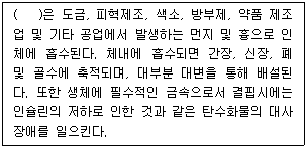
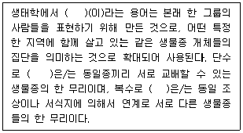
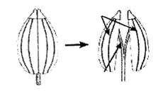
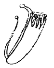
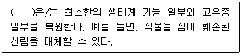
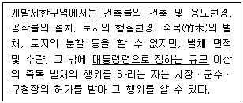
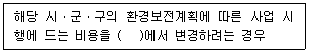

생물분류기사(동물) (2014-05-25 기출문제)
1과목: 계통분류학
1. 다음 식물 중 분열과를 갖고 있지 않는 것은?
- 꿀풀
- 꽃마리
- 현호색
- 미나리
(정답률: 67%)

2. 중생동물에 관한 설명으로 거리가 먼 것은?
- 몸의 구조는 단순하고, 무척추동물의 신장과 내장에 기생한다.
- 후생동물의 상실기 또는 중실포배에 해당하는 동물군이다.
- 체표는 섬모로 덮여 있고, 일반적인 세포형과 기관은 없다.
- 석회충과 육방충 및 시상충이 해당한다.
(정답률: 47%)
3. 다음 곤충강의 분류체계의 연결로 옳지 않은 것은?
- 곤충강 - 유시아강 - 신시군 - 내시류 - 날도래목
- 곤충강 - 유시아강 - 고시군 - 대벌레목
- 곤충강 - 유시아강 - 신시군 - 외시류 - 사마귀목
- 곤충강 - 무시아강 - 좀목
(정답률: 59%)
4. 다음 중 벼과(화본과)의 특징으로 가장 적합한 것은?
- 줄기의 단면은 둥글며, 열매는 영과이다.
- 줄기의 단면은 삼각형이며, 열매는 수과이다.
- 줄기의 단면은 삼각형이며, 열매는 핵과이다.
- 줄기의 단면은 둥글며, 열매는 수과이다.
(정답률: 79%)
5. 다음 식물 중 대부분의 종이 방사상칭꽃이 아닌 것은?
- 현삼
- 두릅나무
- 물푸레나무
- 차나무
(정답률: 38%)
6. 일반적으로 피자식물의 주요 형질 진화방향으로 옳지 않은 것은?
- 자방상위에서 자방하위로 진화했다.
- 배유가 없는 데서 있는 데로 진화했다.
- 망상맥에서 평행맥으로 진화했다.
- 다년생에서 일년생으로 진화했다.
(정답률: 55%)
7. 환형동물 중 다모강(Class Polychaeta)에 관한 설명으로 가장 거리가 먼 것은?
- 보통 암수딴몸이고, 아생생식을 하는 것도 있다.
- 등부의 체절 좌우에는 측각이 있다.
- 유생의 배설기는 원신관이지만, 성체는 보통 후신관이다.
- 다모강은 극질목, 문질목, 악질목으로 나뉜다.
(정답률: 45%)
8. 변이를 유전적 변이와 비유전적 변이로 분류할 때, 다음 중 비유전적 변이에 해당하지 않는 것은?
- 서식처에 따른 변이
- 연령적 변이
- 암수모자이크 및 간성
- 신경원성 변이
(정답률: 76%)
9. 모든 단세포생물들을 포함하기 위해 새로운 계인 원생생물을 제안하여 생물을 원생생물(모네라 포함), 식물, 동물의 3군으로 나누고, 이것들을 모네라에서 갈라져 나온 것으로 표시한 학자는?
- Haeckel
- Whittaker
- Aristotle
- Hickman
(정답률: 74%)
10. 도관요소의 진화경향에 관한 설명으로 옳지 않은 것은?
- 천공판은 계문이 많고 유연벽공인 것에서 계문이 적고 무연벽공인 것으로 변하였다.
- 도관요소의 길이가 점점 짧아졌다.
- 천공의 크기가 점점 커졌다.
- 도관요소가 겹치는 부분이 적고 각도가 작은 타원내지 원형에서 겹치는 부분이 많고 각도가 큰 타원으로 변하였다.
(정답률: 34%)
11. 다음 중 동물모식에 사용되는 용어에 관한 설명으로 옳지 않은 것은?
- 완모식(holotype) - 원저자가 학명을 지을 때 근거로 사용한 표본
- 총모식(syntype) - 원저자가 원기재시 완모식을 지정하지 않았을 때 모식계열의 모든 표본
- 후모식(lectotype) - 모식계열 중에서 완모식을 제외한 모든 표본
- 신모식(neotype) - 완모식, 후모식, 총모식이 분실 또는 파괴되어 존재하지 않을 때 절대적인 필요에 의해 선정한 표본
(정답률: 65%)
12. 열매의 종류에 따른 해당식물의 연결로 옳은 것은?
- 시과 - 사과
- 수과 – 감
- 장과 - 밤
- 핵과 - 앵도
(정답률: 71%)
13. 유시아강에 속하는 다음 곤충목 중 완전변태를 하는 것은?
- 대벌레목
- 노린재목
- 매미목
- 파리목
(정답률: 75%)
14. 갑각강의 특성에 관한 설명으로 옳지 않은 것은?
- 외골격은 키틴질로 되어 있다.
- 바다, 민물, 육상의 갑각류가 있다.
- 2쌍의 촉각을 가진다.
- 가슴과 배의 부속지는 전형적으로 단분지형(單分枝型)이다.
(정답률: 72%)
15. 다음 식물과 중 단체웅예를 갖고 있는 것은?
- 아욱과
- 물푸레나무과
- 물레나물과
- 십자화과
(정답률: 42%)
16. 다음 중 조류(새)의 특징으로 옳은 것은?
- 6쌍의 뇌신경을 가지며, 냉혈이다.
- 방광이 없다.
- 목의 뼈들이 유합되어 뻣뻣하며, 뼈 속은 가득차 있다.
- 심장이 3개의 방으로 되어 있다.
(정답률: 66%)
17. 다음 척추동물 중 턱이 없는 동물은?
- 도룡뇽
- 칠성장어
- 귀상어
- 철갑상어
(정답률: 90%)
18. 다음 중 국화아강에 속하는 과는?
- 목련과
- 뽕나무과
- 콩과
- 초롱꽃과
(정답률: 54%)
19. 다음 중 연체동물의 특징으로 가장 적합한 것은?
- 골격은 규질이나 석회질의 골편으로 되어 있다.
- 산만신경계를 가지며, 폐쇄혈관계를 가진다.
- 체강은 퇴화하여 심장의 주위에 국한되어 있다.
- 방사형 난할을 한다.
(정답률: 62%)
20. 다음 중 해면동물의 특징으로 가장 적합한 것은?
- 진정한 조직이나 기관이 없다.
- 좌우대칭이다.
- 산만신경계를 가진다.
- 피층에 자포를 가진다.
(정답률: 75%)
2과목: 환경생태학
21. 기후변화를 가져올 수 있는 다음 특정물질 중 오존 파괴지수가 가장 큰 것은?
- Halon-1301
- CFC-111
- CCl4
- HCFC-21
(정답률: 86%)
22. 다음 오염물질로 가장 적합한 것은?

- 포름알데하이드
- 석면
- 라돈
- 벤젠
(정답률: 71%)
23. 지구의 질소순환(Nitrogen Cycle)에 관한 설명으로 옳지 않은 것은?
- 건조 대기의 약 79%는 질소이다.
- 질소고정 박테리아를 제외한 지구상의 대부분 생물들은 대기중의 질소를 직접 이용할 수 없다.
- 무기질소의 형태는 질산염, 아질산염, 그리고 암모니아이다.
- 암모니아 이온은 자가영양을 하는 Nitrobactor에 의해 아질산염의 형태로 전환된다.
(정답률: 78%)
24. 다음 중 상리공생 관계로 보기 어려운 것은?
- 지의류 - 원생생물
- 균근 - 콩과 식물뿌리
- 흰동가리 - 말미잘
- 촌충 - 인간
(정답률: 90%)
25. 개체군의 밀도를 측정하려면 먼저 개체군을 형성하는 개체수를 파악하여야 한다. 개체군의 밀도를 측정하는 방법이 아닌 것은?
- 전수조사(total counts)
- 조밀도법(crude density)
- 방형구법(quadrat sampling)
- 비구획법(plotless method)
(정답률: 44%)
26. 다음 오염물질 중 ( )안에 가장 적합한 것은?

- 납화합물
- 수은화합물
- 크롬화합물
- 비소화합물
(정답률: 88%)
27. 수질오염물질을 배출형태에 따라 점오염원과 비점오염원으로 나눌 때 다음 중 일반적으로 비점오염원에 해당하는 것은?
- 하수처리장
- 농경지
- 제지공장
- 비료공장
(정답률: 81%)
28. 사막화의 주요 증상으로 거리가 먼 것은?
- 지하수위가 높아진다.
- 토양의 염류농도가 높아진다.
- 지표수가 감소한다.
- 토양침식이 증가한다.
(정답률: 83%)
29. 대기의 중요한 역할로 가장 거리가 먼 것은?
- 자외선을 차단해 준다.
- 열을 흡수하고 잡아둔다.
- 화학적으로 유용한 기체를 포함한다.
- 지구의 중력을 일정하게 유지시켜 준다.
(정답률: 88%)
30. 지구대기 내에 존재하는 오존에 관한 설명 중 옳지 않은 것은?
- 성층권의 오존층을 파괴하는 염화불화탄소(CFCs)는 불소(F)원소의 성질 때문이다.
- 오존은 존재하는 위치에 따라 우리에게 이롭기도 하고 해가 되기도 한다.
- 성층권의 오존층은 자외선에 의한 광화학 반응에 의하여 산소분자로부터 자연적으로 생성, 소멸된다.
- 오존층의 파괴는 인체에서 피부암 및 시각장애를 일으키고, 식물체에는 생산량을 감소시킨다.
(정답률: 65%)
31. 생물학적 수질평가방법에 이용되는 수서곤충에 대한 설명으로 가장 거리가 먼 것은?
- 담수생태계에 다양한 종들이 풍부하게 분포하기 때문에 수질평가에 적합하다.
- 대부분의 종이 이동성이 적기 때문에 수질평가에 적합하다.
- 다양한 오염원에 대하여 분별적인 민감성이 높아 수질평가에 적합하다.
- 수서곤충은 단순한 생활사로 알려져 있으며, 공간적인 분포의 동일성으로 인해 수질평가에 적합하다.
(정답률: 60%)
32. 두 생물 종 사이에 나타나는 상호작용에 관한 설명으로 거리가 먼 것은? (단, 상호작용의 영향은 (-) 부정적, (0) 중립적, (+) 긍정적)
- 경쟁(0 +): 두 개체군이 서로를 억제하나, 한 종에게는 이득이 된다.
- 포식(+ -): 포식자에게는 긍정적이고 피식자에게는 부정적이다.
- 기생(- +): 숙주에게는 부정적이고 기생충에게는 긍정적이다.
- 편리공생(+ 0): 한 종에게는 이익이 되고 다른 종에게는 영향이 없다.
(정답률: 96%)
33. 부영양화와 빈영양화에 대한 설명으로 옳은 것은?
- 최저수준의 영양물질을 포함하는 정상적인 호수는 농화(enrichment)되지 않은 상태로서 빈영양화 되었다고 하는데 이러한 호수의 물은 깨끗하며 적은 개체수의 수서생물이 서식한다.
- 부영양화는 수체내로 영양물질이 유입되는 물의 비료화로 식물성 플랑크톤과 식물체가 감소하여 발생하는 물의 질적 저하 현상이다.
- 빈영양 호수의 경우 식물 영양물질의 유입이 높다.
- 부영양 호수의 경우 조류 대발생이 거의 없다.
(정답률: 78%)
34. 다음 수질오염방지시설 중 물리적 처리시설에 해당하는 것은?
- 침사시설
- 포기시설
- 침전물 개량시설
- 이온교환시설
(정답률: 80%)
35. 자연환경에서 생물학적, 생리학적, 행동학적 상호작용의 모든 면을 포함하는 생물들의 역할을 의미하는 것으로 가장 적합한 것은?
- Pyramid of biomass
- Ecological niche
- BOD
- Guild
(정답률: 83%)
36. 두 개의 종은 자원이 제한된 조건 아래서 무기한 같이 살지 못하고 또 같은 방식으로 환경과 상호작용 할 수 없다는 것은?
- 경쟁배타의 원리
- 적자생존의 원리
- 기생
- 세력권다툼
(정답률: 94%)
37. 다음은 용어에 관한 설명이다. ( )안에 공통으로 들어갈 가장 적합한 것은?

- group
- population
- community
- biome
(정답률: 63%)
38. 다음 중 순 일차 생산성(net primary productivity; NPP)에 관한 가장 적합한 설명인 것은?
- 어떤 지역에서 생산자에 의해 저장된 에너지의 생산율을 의미하며, 측정기간 동안 독립영양생물이 스스로의 생장을 위해 사용한 유기물의 양도 포함한다.
- 스스로의 생장에 사용한 유기물의 양은 고려하지 않고 독립영양생물 내에 축적됨으로써 다른 종속영양생물의 먹이로 섭취 가능한 형태의 유기물의 양을 가리킨다.
- 독립 및 종속영양생물이 사용하고 남은 유기물의 축적량을 가리킨다.
- 생산자가 아닌 소비자의 단계에서 먹이사슬을 통해 다음 단계의 소비자에게 먹이로 사용될 수 있는 형태의 에너지 저장량을 의미한다.
(정답률: 62%)
39. 작은 상록관목과 나무들이 밀집해 서식하는 채퍼랠(chaparral)이 나타나는 생물군계로 가장 적합한 것은?
- 지중해성 관목림
- 온대낙엽수림
- 타이가
- 툰드라
(정답률: 70%)
40. 조류 새끼의 먹이 내용물 조사 시 사용되는 방법으로 새끼의 목에 비닐 전선 등으로 가볍게 묶어두고서 어미가 제공한 먹이가 넘어가지 못하도록 하고, 호흡은 가능하도록하게 하는 조사방법은?
- 경륜법(collar method)
- 정점조사법(point census method)
- 메쉬법(mesh method)
- 선조사법(line transect method)
(정답률: 69%)
3과목: 형태학
41. 다음 뿌리유형 중 내초에서부터 바깥쪽으로 내생적으로 만들어지는 뿌리를 의미하는 것은?
- 주근
- 측근
- 근모
- 부정근
(정답률: 78%)
42. 조류의 호흡에 관한 설명으로 옳지 않은 것은?
- 숨 쉴 때 공기는 항상 한 방향으로만 흐른다.
- 폐를 중심으로 3쌍의 전기낭과 2쌍의 후기낭이 있다.
- 조류는 포유류에 비해 훨씬 많은 폐포를 지닌다.
- 측기관지 주변의 모세혈관 때문에 혈액은 공기의 흐름에 대해 수직방향으로 흐르면서 교차교환의 형태를 이룬다.
(정답률: 60%)
43. 다음 중 외떡잎식물의 배의 발달유형에 관한 설명으로 거리가 먼 것은?
- 근단(뿌리끝)에 근초가 존재한다.
- 자엽은 하나이다.
- 경단에는 여러 어린잎이 이미 형성되어 있다.
- 초기의 배는 심장형이며 성장하면서 원형으로 발달한다
(정답률: 45%)
44. 삼엽충에 관한 설명으로 가장 적합한 것은?
- 모두 화석생물로서 고생대 말기에 절멸되었다.
- 두부는 2개의 유합된 체절을 갖고 있다.
- 모두 소형 플랑크톤성인 것으로 알려져 있다.
- 촉각은 없으나, 부속지는 있다.
(정답률: 76%)
45. 부속지골격(appendicular skeleton)에 속하지 않는 것은?
- 팔다리뼈
- 상악골(maxilla)
- 요대(pelvic girdle)
- 견대(pectoral girdle)
(정답률: 63%)
46. 하나의 마디에 3개 이상의 잎이 나는 잎차례는?
- 대생(마주나기)
- 저생(낮게나기)
- 윤생(돌려나기)
- 호생(어긋나기)
(정답률: 78%)
47. 협과의 변형으로써 씨가 들어있는 열매 사이가 매우 잘록하여, 성숙하면 여러 동강으로 떨어지며, 아래 그림과 같은 형태를 갖는 열매 유형은?

- 삭과
- 골돌과
- 시과
- 분리과
(정답률: 68%)
48. 해버스골공동계(Haversian system) 또는 골단위(osteon)에 관한 설명으로 옳은 것은?
- 치밀골(compact bone)을 구성하는 반복되는 구조 단위이다.
- 적골수(red marrow)를 포함하고 있다.
- 해면골로 되어 있다.
- 죽어 있는 물질만을 포함한다.
(정답률: 77%)
49. 다음 중 계통발생상 가장 원시적인 중심주는?
- 진정중심주
- 망상중심주
- 원형중심주
- 부제중심주
(정답률: 35%)
50. 많은 단자엽 식물의 표피(특히, 벼와 사초의 표피)에서 잎의 수축과 펴짐에 관여하는 특수세포는?
- 장세포
- 규산세포
- 우두상세포
- 코르크세포
(정답률: 62%)
51. 근육조직(muscular tissue)과 관련된 설명으로 옳지 않은 것은?
- 근육조직은 세포성분이 비교적 적고, 세포사이 물질이 많은 조직이며, 아교섬유가 많고, 기절과 굴절율이 같다.
- 골격근은 수의근이다.
- 근육조직은 근막이나 골격에 붙어 운동하는 것 이외에 내장이나 혈관벽 및 심장에도 있다.
- 근육세포는 자극전도성이 좋다.
(정답률: 64%)
52. 심재(heart wood)에 관한 설명으로 옳지 않은 것은?
- 목재 가장자리에 위치하며 물기가 있고 짙은 색을 띤 부분이다.
- 나무가 늙어감에 따라 껌, 기름, 수지, 탄닌 같은 대사산물이 직접된 부분이다.
- 변재보다 내구성이 강하고 밀도가 높고 향기도 더 짙은 부분이다.
- 통도기능이 정지된 부분으로 제거해도 나무의 생명에는 큰 지장이 없다.
(정답률: 71%)
53. 다음 곤충목 중 수서생활을 하는 유충 시기를 가지며, 특히 하순이 먹이감을 효율적으로 포획할 수 있도록 발달된 것은?
- 집게벌레목
- 메뚜기목
- 잠자리목
- 매미목
(정답률: 91%)
54. 치아(teeth)에 관한 설명으로 옳지 않은 것은?
- 원구류의 일종인 칠성장어는 골질(bony)치아를 가지고, 대부분의 척추동물은 각질(horny)치아를 가진다.
- 일부 두꺼비, 거북이 등은 치아가 없다.
- 진골어류의 치아는 턱뼈의 바깥쪽이나 정상에 붙어있는 단생치아(acrodont)를 가진다.
- 물고기나 양서류같은 하등 척추동물은 모든 치아가 동일한 동형치아(homodont)를 가진다.
(정답률: 58%)
55. 아래 그림과 같은 형태를 갖는 웅예 명칭은?

- 양체웅예(diadelphous)
- 이강웅예(didynamous)
- 단체웅예(monadelphous)
- 취약웅예(syngenesious)
(정답률: 50%)
56. 포배에 관한 설명으로 옳지 않은 것은?
- 성게에서는 바깥의 세포들이 섬모를 형성함으로써 포배는 수정막에서 탈출하여 자유유영 시기를 시작한다.
- 개구리의 포배는 동물극에 있는 난황이 우세하므로 비대칭이며, 포배강은 강 위로 얇고 지붕 같은 덮개를 형서하는 극세포들과 함께 식물극 근처에서 형성된다.
- 많은 양의 난황 때문에 새와 파충류의 배에서는 포배가 단순하지 않다.
- 포유류의 포배단계는 배낭에 의해 대표되는데 이것은 32개의 세포로 출발한다.
(정답률: 59%)
57. 척추동물의 배아는 내배엽, 중배엽, 외배엽의 3배엽으로 구성되는데 다음 중 각 배엽과 그로부터 생겨난 성체구조가 바르게 짝지어진 것은?
- 외배엽 - 신경계
- 외배엽 - 소화관 내층
- 외배엽 - 생식계
- 내배엽 - 순환계
(정답률: 57%)
58. 곤충의 말피기관(Malpighian tube)에 관한 설명으로 가장 적합한 것은?
- 곤충의 중장과 후장 사이에 있는 배설기관이다.
- 곤충의 음식물의 소화흡수가 이루어지는 소화기관이다.
- 곤충의 청각기관이다.
- 곤충의 후각기관이다.
(정답률: 72%)
59. 뼈를 구성하는 3가지 기본물질과 거리가 먼 것은?
- 연골
- 골기질
- 골아세포
- 파골세포
(정답률: 76%)
60. 배유(배젖)를 형성하기 위해서 융합하는 핵들은?
- 2개의 극핵(2n)과 1개의 정세포핵(n)
- 1개의 난자핵(n)과 1개의 정세포핵(n)
- 1개의 난자핵(n)과 2개의 정세포핵(2n)
- 2개의 조세포핵(2n)과 1개의 정세포핵(n)
(정답률: 63%)
4과목: 보존 및 자원생물학
61. 거의 동일한 환경자원을 이용하는 같은 영양단계에 있는 종들을 의미하는 일반적인 용어는?
- host
- decomposers
- guild
- keystone species
(정답률: 83%)
62. 다음 중 생물다양성에 대한 주요 위협요인으로 가장 거리가 먼 것은?
- 서식지 악화
- 외래종의 도입
- 재배 및 양식
- 서식지 단편화
(정답률: 87%)
63. 널리 산재하여 분포하는 곰과 고래 같은 동물은 개체군의 밀도가 일정 수준 이하로 감소하게 되면 짝을 찾기가 어렵게 되는데 이러한 현상을 설명한 것으로 가장 적합한 것은?
- Edge effect
- Founder effect
- Population bottle-neck effect
- Allee effect
(정답률: 65%)
64. 개체군의 변화를 알아보는 방법으로 자원조사, 개체군 조사, 표본조사가 있다. 이 중 개체군의 동태파악을 위한 조사(demographic study)에 관한 설명으로 가장 적합한 것은?
- 비용이 저렴하고 직접적인 방법이다.
- 한 지역을 몇 개의 표본구로 나누고 각 표본구안의 개체수를 확인한다.
- 필요하면 새의 다리나 동물의 귀에 표찰을 부착한다.
- 조사 대상종의 생활주기가 뚜렷하지 않거나, 작거나, 감추어져 있을 때 가장 유용하게 적용되며, 한 개체군이 매우 크거나 광범위한 지역을 점하는 경우 아주 유용하다.
(정답률: 64%)
65. 지구온난화는 기후적 변화를 일으킬 수 있으며 이는 동식물 서식지의 변화를 야기하게 되는데, 이 기후변화와 생물다양성의 관계를 설명한 것으로 옳은 것은?
- 온도가 상승함에 따라 사과 등 작물의 재배가능 한계선은 현재보다 남쪽으로 확장되며, 특히 종자식물들의 멸종으로 이어질 수 있다.
- 이산화탄소 농도의 증가는 상대적으로 질소량의 증가를 유발하여, 식물체에 비료성분을 공급하여 줌으로써 식물체의 질적 상태를 개선시킨다.
- 식생대의 단순화로 인해 식물종들 간의 경쟁작용을 높여 열세종의 도태를 증가시키므로, 생물 상호작용으로 인한 다양성 감소현상은 가속화된다.
- 지구온난화에 대한 기여도가 가장 큰 물질은 SO2, CO 등이 대표적이며, 이 물질은 성층권에 도달하여 오존층을 파괴하여 식물의 생장에 큰 영향을 미친다.
(정답률: 58%)
66. 생물 다양성 보호를 위해 국제적인 공동 협력이 필요한 이유로 가장 거리가 먼 것은?
- 종이나 생태계를 위협하는 모든 문제들은 항상 국제적으로만 발생한다.
- 종은 흔히 구가간의 장벽을 넘어 이동한다.
- 생물 다양성의 이익은 국제적인 중요성을 가진다.
- 생물을 수출하는 국가에서는 수출량을 충당하기 위해 자원의 과도한 이용이 초래될 수 있다.
(정답률: 87%)
67. 과학자들이 동물원에서 한 종의 보존을 위한 사육방법을 결정하기 전에 검토하여야 할 사항으로 가장 거리가 먼 것은?
- 사육 개체수는 얼마나 필요하고 어느 정도가 그 종의 보존에 효과적인가?
- 인위적으로 사육하는 희귀종의 개체가 정말로 그 종을 대표하는가?
- 동물원에서 사육하여 보존하는 것이 정말로 그 종의 보전에 효과적인가?
- 어떤 개체를 사육하는 것이 동물원의 이익에 부합하는가?
(정답률: 90%)
68. 다음 중 생물다양성과 관련된 설명으로 가장 적합한 것은?
- 각 나라마다의 생물다양성은 생물다양성협약에 의존해 유지되어 왔다.
- 생물다양성 중 종수준에서의 다양성은 인류에게 많은 자원을 제공해 줄 뿐만 아니라, 여러 가지 대체자원도 제공한다.
- 생태적으로 단순한 것이 좋다.
- 생물다양성은 일반적으로 생물이 서식하는 환경의 다양성은 포함하지 않는다.
(정답률: 72%)
69. 다음 진화의 양상 중 서로 다른 종이 비슷한 환경에 대해 비슷한 적응을 할 때 일어나는 현상으로 생화학적인 면에서부터 형태적 면에 이르기까지 거의 모든 수준에서 일어나며, 포유류와 오스트레일리아의 유대류 등에서 뚜렷이 볼 수 있는 현상은?
- 생식적 격리(Reproductive isolation)
- 수렴진화(Convergent evolution)
- 종분화(Speciation)
- 발산진화(Divergent evolution)
(정답률: 81%)
70. IUCN 이 보존의 대상종으로 구분한 범주에 속하지 않는 것은?
- 절멸종(Extinct)
- 다양종(Various)
- 위험종(Endangered)
- 취약종(Vulnerable)
(정답률: 87%)
71. 다음 중 보전생물학의 개념에 관한 설명으로 가장 적합한 것은?
- 보전생물학은 단기간에 걸친 생물보호를 기본 관심사로 삼는다.
- 보전생물학은 종, 군집 및 생태계에 미치는 인간의 활동에 대해서는 관심을 두지 않는다.
- 보전생물학은 생물다양성 붕괴의 위협에 대응하여 발전한 종합적인 과학이다.
- 보전생물학은 경제적인 요인들을 일차적으로 고려하고, 일반화된 이론접근에 중점을 둔다.
(정답률: 83%)
72. 우리나라 하천 생태계에서 생물다양성 감소의 직접적인 원인과 가장 거리가 먼 것은?
- 골채 채취
- 인구의 증가
- 유역의 교란
- 유해 독극물 유출
(정답률: 79%)
73. 다음 중 멸종되기 쉬운 종으로 가장 거리가 먼 것은?
- 몸체가 작은 종
- 개체군의 크기가 작은 종
- 유전적 변이가 낮은 종
- 계절에 따라 이동하는 생물 종
(정답률: 85%)
74. 서식지 단편화에 관한 설명으로 옳지 않은 것은?
- 대규모 서식지가 도로, 도시 등 개발에 의해 분할되는 것을 의미한다.
- 종이 확산되고 정착하는 능력을 제한한다.
- 그 지역 토착동물이 먹이를 얻는 능력을 약화시킬 수 있다.
- 분할된 외래종이나 토착 병원균 종류들이 침입할 가능성을 낮춘다.
(정답률: 82%)
75. 소개체군에서 일어날 수 있는 유전적 부동(genetic drift)과 가장 관련이 먼 것은?
- 근교약세
- 진화적 유연성 소실
- 타식약세
- 가장자리효과
(정답률: 50%)
76. 서로 떨어진 지역간의 종 다양성을 비교하기 위해 고안된 수학적 지수에 관한 설명으로 옳은 것은?
- 이끼군집이 고도에 따라 계속 변한다면 베타 다양성(beta diversity)이 높다고 말할 수 있지만, 산비탈을 따라 계속 동일한 종조성이 유지된다면 베타 다양성이 낮다고 할 수 있다.
- 알파 다양성(alpha diversity)은 종조성이 다양한 환경기울기에 따라 얼마나 변하는지 그 정도를 나타내는 것이다.
- 감마 다양성(gamma diversity)이란 어떤 종들이 지리적으로 같은 지역에서 다른 종류의 서식처를 만날 확률을 말한다.
- 다양성 지수간의 상관성은 매우 낮게 나타난다.
(정답률: 57%)
77. 소수 개체군의 멸종에 관한 설명으로 가장 거리가 먼 것은?
- 작은 수, 규모의 하위 개체는 멸종하기 쉽다.
- 지역, 분류군의 다양성과 멸종률은 긍정적인 비례관계를 나타낸다.
- 동식물 멸종에서 아주 위험한 요소로는 서식처 또는 섬지역 등이다.
- 갑자기 늘어난 개체수는 분열되지 않은 개체보다 더 위험하다.
(정답률: 75%)
78. 과거 인간활동에 의한 멸종은 척추동물의 종 다양성에 중대한 영향을 미치고 있어 이에 대한 대비가 필요한 상황이다. 이를 위해 국제자연보전연맹(IUCN)은 멸종 위기에 처한 생물군의 종합적인 목록을 선정해서 작성 발간하여 멸종 방지를 위한 사전적 예방관리에 노력하고 있는데, 이 자료집의 명칭으로 가장 적합한 것은?
- 세계 멸종위기경고종 인식집(Inventory of Endangered Warning Species in the World)
- 세계동물명집(Checklist of Fauna)
- 적색자료집(Red Data Book)
- 멸종현황자료집(Inventory of Endangered Species)
(정답률: 58%)
79. 다음 중 일반적으로 종자은행에 저장하기 어려운 난저장성(recalcitrant) 종자자원에 해당하는 것은?
- 옥수수
- 코코아
- 감자
- 쌀
(정답률: 79%)
80. 아래 표는 생물군집과 생태계를 복원하는데 이용될 수 있는 4가지 접근법 중 1가지에 관한 설명이다. ( )안에 가장 적합한 방법은?

- 대체
- 회복
- 복원
- 방치
(정답률: 48%)
5과목: 자연환경관계법규
81. 자연공원법상 공원관리청이 자연공원을 효과적으로 보전하고 이용할 수 있게 하기 위해 구분한 용도지구의 구분으로 거리가 먼 것은?
- 공원자연보존지구
- 공원자연환경지구
- 공원개발환경지구
- 공원문화유산지구
(정답률: 60%)
82. 자연공원법상 자연공원에서의 금지행위 중 “지정된 장소 밖에서의 주차행위를 한 자”에 대한 과태료 부과기준으로 옳은 것은?
- 500만원 이하의 과태료를 부과한다.
- 100만원 이하의 과태료를 부과한다.
- 50만원 이하의 과태료를 부과한다.
- 10만원 이하의 과태료를 부과한다.
(정답률: 50%)
83. 생물다양성 보전 및 이용에 관한 법률상 용어의 뜻으로 옳지 않은 것은?
- “생물다양성”이란 육상생태계 및 수생생태계와 이들의 복합생태계를 포함하는 모든 원천에서 발생한 생물체의 다양성을 말하며, 종내 · 종간 및 생태계의 다양성을 포함한다.
- “생물자원”이란 사람을 위하여 가치가 있거나 실제적 또는 잠재적 용도가 있는 유전자원, 생물체, 생물체의 부분, 개체군 또는 생물의 구성요소를 말한다.
- “유전자원”이란 유전(遺傳)의 기능적 단위를 포함하는 식물 · 동물 · 미생물 또는 그 밖에 유전적 기원이 되는 유전물질 중 실질적 또는 잠재적 가치를 지닌 물질을 말한다.
- “생태계 교란생물”이란 외국으로부터 인위적 또는 자연적으로 유입되어 그 본래의 원산지 또는 서식지를 벗어나 존재하게 된 생물을 말한다.
(정답률: 64%)
84. 자연환경보전법상 생태 · 경관보전지역의 지속가능한 보전 · 관리를 위하여 생태 · 경관보전지역을 구분하여 지정 · 관리하고자 할 때, 그 구분지역으로 옳지 않은 것은?
- 생태·경관핵심보전구역
- 생태·경관완충보전구역
- 생태·경관전이보전구역
- 생태·경관관리보전구역
(정답률: 40%)
85. 야생생물보호 및 관리에 고나한 법률 시행규칙상 “유해야생동물”과 거리가 먼 것은?
- 장기간에 걸쳐 무리를 지어 농작물 또는 과수에 피해를 주는 참새
- 일부지역에 서식밀도가 너무 높아 농 · 림 · 수산업에 피해를 주는 호사비오리
- 전주 등 전력시설에 피해를 주는 까치
- 일부지역에 서식밀도가 너무 높아 분변(糞便) 및 털 날림 등으로 문화재 훼손이나 건물 부식 등의 재산상 피해를 주거나 생활에 피해를 주는 집비둘기
(정답률: 68%)
86. 습지보전법상 습지보전을 위해 설치할 수 있는 시설 중 가장 거리가 먼 것은?
- 습지연구시설
- 습지준설복원시설
- 습지오염방지시설
- 습지생태관찰시설
(정답률: 74%)
87. 자연공원법상 공원관리청의 허가를 받지 아니하고 사용료를 징수한 자에 대한 벌칙기준으로 옳은 것은?
- 3년 이하의 징역 또는 3천만원 이하의 벌금에 처한다.
- 2년 이하의 징역 또는 2천만원 이하의 벌금에 처한다.
- 1년 이하의 징역 또는 1천만원 이하의 벌금에 처한다.
- 200만원 이하의 과태료에 처한다.
(정답률: 35%)
88. 야생생물보호 및 관리에 관한 법률상 생물자원보전시설을 등록한 자가 시설 및 요건을 갖추지 못하여 등록이 취소된 경우, 취소된 날로부터 며칠이내에 그 등록증을 환경부장관 등에게 반납하여야 하는가?
- 3일 이내에
- 5일 이내에
- 7일 이내에
- 15일 이내에
(정답률: 66%)
89. 환경정책기본법령상 하천의 수질 및 수생태계 기준 중 “음이온 계면활성제(ABS)" 기준값(mg/L)으로 옳은 것은? (단, 사람의 건강보호기준)
- 검출되어서는 안 됨(검출한계 0.001)
- 검출되어서는 안 됨(검출한계 0.01)
- 0.⑤ 이하
- 0.5 이하
(정답률: 60%)
90. 야생생물보호 및 관리에 관한 법률 시행규칙상 멸종위기 야생생물 Ⅰ급에 해당하지 않는 것은?
- 표범
- 따오기
- 흰꼬리수리
- 죽배란
(정답률: 72%)
91. 국토의 계획 및 이용에 관한 법률상 각 용도지역별 용적률의 최대한도 기준으로 옳은 것은?
- 도시지역 중 녹지지역 : 500퍼센트 이하
- 관리지역 중 생산관리지역 : 100퍼센트 이하
- 농림지역 : 80퍼센트 이하
- 자연환경보전지역 : 100퍼센트 이하
(정답률: 63%)
92. 국토기본법상 국토종합계획은 얼마의 기간을 단위로 하여 수립하는가?
- 2년
- 5년
- 10년
- 20년
(정답률: 61%)
93. 농지법규상 농지보전부담금을 자진납부하려는 경우 그 납부기간 기준은?
- 자진납부에 따른 농지보전부담금 내역확인서를 교부받은 날로부터 5일로 한다.
- 자진납부에 따른 농지보전부담금 내역확인서를 교부받은 날로부터 7일로 한다.
- 자진납부에 따른 농지보전부담금 내역확인서를 교부받은 날로부터 10일로 한다.
- 자진납부에 따른 농지보전부담금 내역확인서를 교부받은 나로부터 15일로 한다.
(정답률: 28%)
94. 환경정책기본법령상 이산화질소(NO2)의 대기환경기준으로 옳은 것은? (단, 24시간 평균치)
- 0.02ppm 이하
- 0.03ppm 이하
- 0.⑤ppm 이하
- 0.06ppm 이하
(정답률: 64%)
95. 자연환경보전법규상 생태통로 설치기준에 고나한 설명으로 옳지 않은 것은?
- 생태통로 내부에 돌무더기나 고사목 · 그루터기 · 장작더미 등의 다양한 서식환경과 피난처를 설치한다.
- 생태통로 입구와 출구에는 원칙적으로 현지에 자생하는 종을 식수하며, 토양 역시 가능한 한 공사 중 발생한 절토를 사용한다.
- 생태통로 내부에는 다양한 수직적 구조를 가진 아교목 · 관목 · 초목 등으로 조성한다.
- 생태통로의 길이가 길수록 폭을 좁게 설치한다.
(정답률: 75%)
96. 개발제한구역의 지정 및 관리에 관한 특별조치법상 개발제한구역 지정 및 해체기준으로 옳지 않은 것은?
- 국방부장관의 요청으로 보안상 도시의 개발을 제한할 필요가 있다고 인정되면 개발제한구역의 지정에 한해 국가기본관리계획에 의해 결정한다.
- 도시의 정체성 확보 및 적정한 성장관리를 위하여 개발을 제한할 필요가 있는 지역이 지정지역 대상에 해당한다.
- 개발제한구역의 지정 및 해제의 기준은 대상 도시의 인구 · 산업 · 교통 및 토지이용 등 경제적 · 사회적 여건과 도시 확산 췌, 그 밖의 지형 등 자연환경 여건을 종합적으로 고려하여 대통령령으로 정한다.
- 도시주변의 자연환경 및 생태계를 보전하고 도시민의 건전한 생활환경을 확보하기 위하여 개발을 제한할 필요가 있는 경우 지정지역 대상에 해당한다.
(정답률: 55%)
97. 다음은 개발제한구역의 지정 및 관리에 관한 특별조치법 시행령상 개발제한구역에서의 행위제한에 관한 내용이다. 밑줄친 “대통령령으로 정하는 규모”의 기준으로 옳은 것은?

- 벌채 면적 500제곱미터 또는 벌채 수량 5세제곱미터
- 벌채 면적 300제곱미터 또는 벌채 수량 2세제곱미터
- 벌채 면적 200제곱미터 또는 벌채 수량 2세제곱미터
- 벌채 면적 100제곱미터 또는 벌채 수량 1세제곱미터
(정답률: 66%)
98. 다음은 환경정책기본법령상 환경보전계획을 수립하거나 변경하고자 할 때, 대통령령으로 정하는 경미한 사항의 경우에는 지방환경관서의 장과의 협의를 생략할 수 있는 기준이다. ( )안에 알맞은 것은?

- 100분의 10 이내의 범위
- 100분의 20 이내의 범위
- 100분의 30 이내의 범위
- 100분의 50 이내의 범위
(정답률: 41%)
99. 백두대간 보호에 관한 법률상 산림청장은 백두대간보호기본계획을 몇 년 마다 수립하여야 하는가?
- 1년
- 3년
- 5년
- 10년
(정답률: 54%)
100. 자연환경보전법령상 생태ㆍ자연도를 작성할 때 구분하는 지역 중 별도관리지역으로 가장 거리가 먼 것은?
- 수도법에 따른 상수원보호구역
- 산림보호법에 따른 산림보호구역
- 문화재보호법에 따라 천연기념물로 지정된 구역
- 자연환경보전법에 따른 시ㆍ도 생태ㆍ경관보전지역
(정답률: 36%)